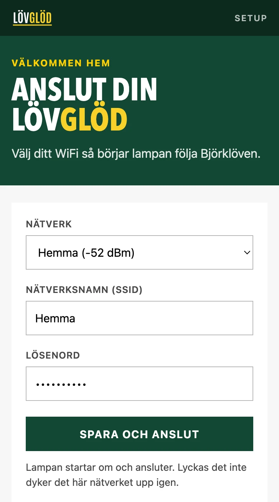
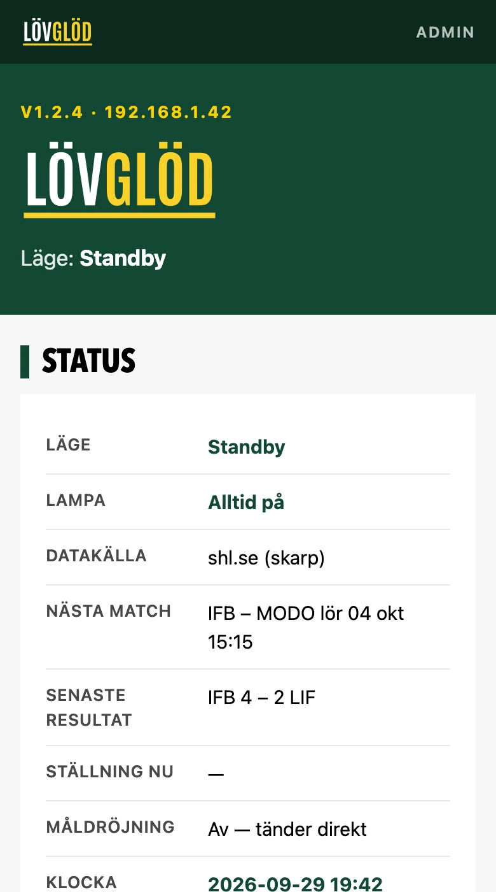

Koppla in, anslut med mobilen, klart. Här står också vad inställningarna gör, hur du läser av ljuset och vad du gör när något inte stämmer.
Lampan har ingen app och inget konto. Den startar ett eget litet nät, du ansluter med mobilen och berättar vilket WiFi den ska använda.
Uttaget sitter i sockelns baksida. En vanlig USB-C-laddare på 5 V och minst 2 A räcker. Listen flödar in i gult och börjar sedan pulsa grönt.
Välj nätet LövGlöd-Setup-XXXX i mobilens WiFi-inställningar. Det är öppet, utan lösenord. Inställningssidan dyker upp av sig själv; gör den inte det, gå till http://192.168.4.1.
Lampan pratar bara 2,4 GHz. Har routern separata nät för 2,4 och 5 GHz, välj 2,4-nätet. Tryck Spara och anslut.
En gul punkt jagar runt medan lampan ansluter, en gul stapel medan den hämtar matchdata. När listen andas lugnt i gult är den klar. Blir det röd puls gick anslutningen inte igenom, se Felsökning.

Första gången efter flashning visar portalen bara listvalet. Välj den LED-list du lödde in, WS2812B eller APA102, och antal dioder, och tryck Spara list.
Pulsen flyttar direkt till den valda listen. Syns den inte är valet fel. Dra sedan ur strömmen, koppla in igen och fortsätt med WiFi som i stegen här bredvid.
Listvalet sitter kvar genom omstarter, uppdateringar och Glöm WiFi. Hur du flashar kortet står i Skriv ut själv.
När lampan är på ditt WiFi har den en egen sida i webbläsaren. Där syns nästa match, senaste resultat och ställningen, och där ställer du in allt. Du måste vara på samma nät som lampan.
markusbackman/lovglod. Tomt fält stänger av uppdateringarna.
Lampan har ingen skärm. Allt den vill säga, säger den med ljuset. Matchlägena finns på produktsidan. Här är det lampan visar om sig själv.
LövGlöd-Setup-XXXX.Det mesta syns på statussidan. Kolla raderna Läge, Lampa, Klocka och Omstarter först.
Längst ner på statussidan finns Felsökning med nätverkstest, datakällorna och LED-listen, för den som vill gräva djupare.
Kolla Lampa på statussidan: i läget Bara match är den släckt mellan matcherna, och Av är alltid släckt. Står den på Alltid på, prova en annan USB-C-laddare och kabel, och kontrollera att ljusstyrkan inte står på 5.
Lampan når inte det sparade nätet: routern är nere, lösenordet ändrat, nätet är bara 5 GHz, eller lampan står för långt bort. Löser det sig av sig själv slocknar det röda inom fem minuter. Annars: anslut mobilen till LövGlöd-Setup-XXXX igen och ange nätet på nytt.
Gå till http://192.168.4.1 med mobilen ansluten till setup-nätet. Stäng av mobildata under tiden om mobilen vill hoppa tillbaka till 4G.
lovglod.local går inte att öppnaVissa nät, till exempel gäst- och företagsnät, släpper inte igenom namnet. Använd lampans IP-adress från routerns lista över anslutna enheter. Datorn eller mobilen måste vara på samma nät som lampan.
Lampan är på nätet men får inget svar från SHL. Oftast ligger shl.se nere en stund, och lampan kommer tillbaka själv. Hämta matchdata nu provar direkt.
Justera Fördröjning på mål. Kommer lampan före, öka värdet; kommer den efter, sänk. Strömmande tjänster ligger ofta längre efter än marksänd tv. Medan ett mål väntar visar statussidan Mål på gång med nedräkning.
Kolla Klocka på statussidan. Står det INTE synkad har lampan inte fått tiden från nätet, och då är matchläge, mål och seger avstängda. Det brukar lösa sig när nätet släpper ut lampan mot internet. Kolla också att Nästa match visar rätt match.
Listtypen eller antalet dioder är fel inställt. Ändra under Felsökning → Ändra LED-list längst ner på statussidan.
Titta på Omstarter och Senaste omstart. Startar den om vid ljusa effekter räcker laddaren inte till. Byt till en på minst 2 A, eller sänk ljusstyrkan.
Nytt nät: Glöm WiFi på statussidan, sedan steg 2–4 under Anslut. Vill du nollställa allt, också listvalet: flasha om kortet enligt installationsguiden.